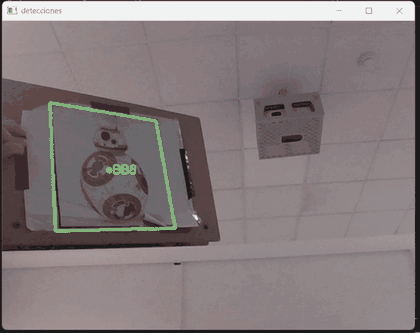
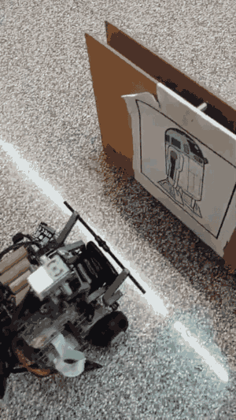
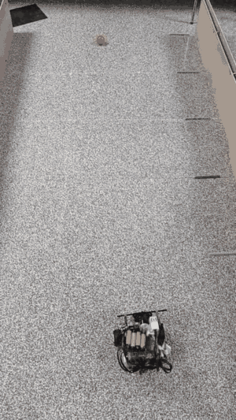
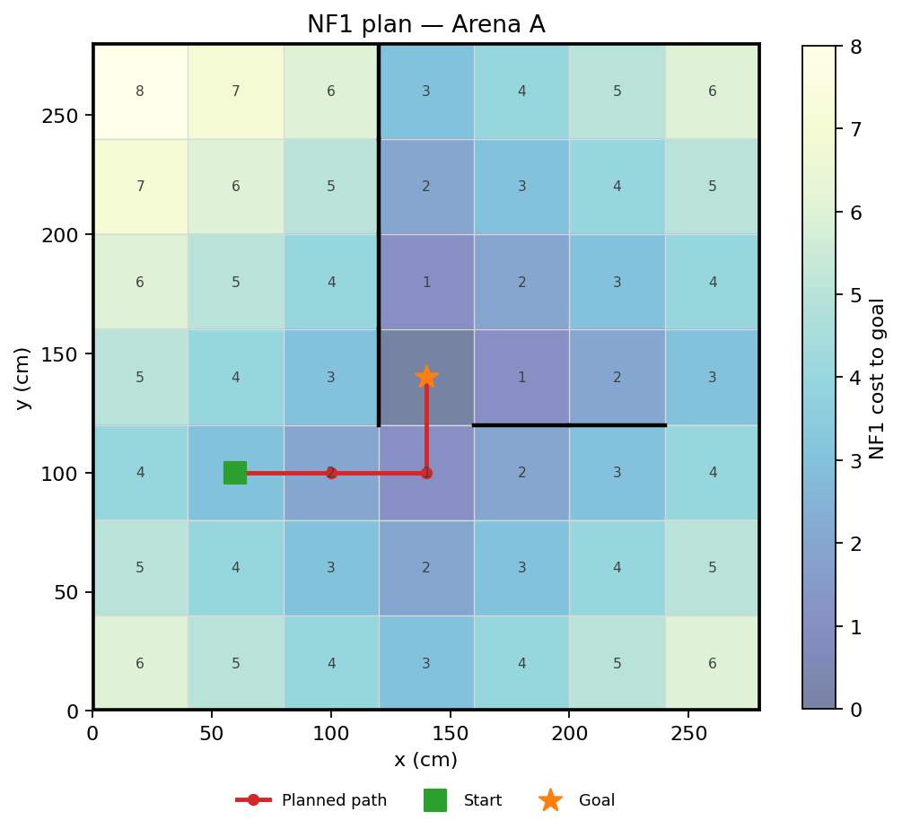
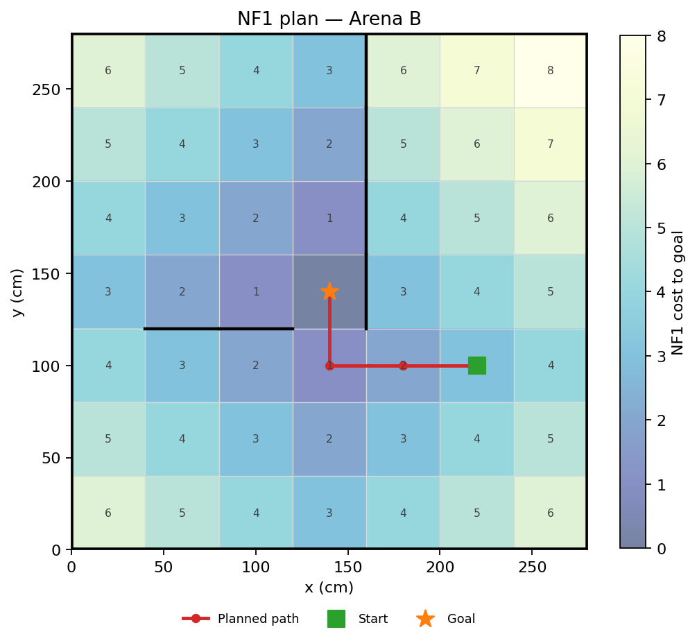

Fase 1
Slalom
Arcos cronometrados con corrección final contra la pared mediante el ultrasonido. No intenta localizarse durante el recorrido: usa tiempos calibrados y dos checkpoints de distancia.
Robots Autónomos · EINA · Universidad de Zaragoza
Un stack completo en Python para un robot diferencial BrickPi3: slalom, planificación NF1, seguimiento de pelota y reconocimiento de marcadores con ORB + RANSAC. Código, documentación y una guía real para montarlo en tu propio robot.
Mismo hardware, distinta estructura: la página explica qué medir, qué configurar y qué recalibrar antes de mover un motor.

Qué vas a encontrar
El repositorio separa cinemática, odometría, planificación, visión y misión. Cada capa se puede probar por separado y sustituir sin reescribir las demás. Eso es lo que permite adaptarlo a una estructura distinta del mismo hardware.
Incluye
No incluye
La misión
El robot no ejecuta una secuencia fija: mide, decide y corrige. La misión completa encadena percepción, planificación y control, y cada fase se puede probar por separado.
Fase 1
Arcos cronometrados con corrección final contra la pared mediante el ultrasonido. No intenta localizarse durante el recorrido: usa tiempos calibrados y dos checkpoints de distancia.
Fase 2
Planifica con NF1 desde la meta, navega celda a celda y replanifica cuando detecta un obstáculo. Si una arista se bloquea, se elimina del grafo y se reconstruye el campo de costes.
Fase 3
Segmenta el rojo en HSV, se queda con el contorno mayor y usa su área como proxy de distancia. El centroide corrige el giro; el área corrige el avance hasta cerrar la garra.
Fase 4
Reconoce los marcadores R2-D2 / BB-8 con ORB y una homografía RANSAC. Elige el marcador asignado, se aproxima con el área aparente y cruza la puerta.


Arquitectura
La misión no llama directamente a los motores. Pasa por una API de robot, un estimador de pose y controladores con lazo cerrado. Esa separación es lo que hace el código testeable y portable.
| Módulo | Responsabilidad |
|---|---|
robot/kinematics.py | Cinemática directa/inversa, integración de pose, ángulos. |
robot/odometry.py | Hilo de odometría, encoders + giroscopio, log CSV opcional. |
robot/mapping.py | Mapa, NF1, gradiente, replanificación, figuras. |
robot/vision.py | HSV de pelota, ORB + RANSAC, servos visuales. |
robot/robot.py | Motores, waypoints, obstáculos, pared, garra. |
robot/mission.py | Selección de arena y secuencia de las cuatro fases. |
robot/hardware.py | Adaptador BrickPi3 y punto de entrada para un simulador. |
from robot.config import ARENAS
from robot.hardware import BrickPiHardware
from robot.mission import Mission
from robot.robot import Robot
robot = Robot(BrickPiHardware())
try:
Mission(robot, ARENAS["a"]).run()
finally:
robot.shutdown()La misión arranca la odometría, ejecuta las fases en orden y deja la parada segura en finally. Para probar una sola fase: python main.py --phase maze.
Robot.stop().Por qué funciona
El robot funciona porque cada decisión se apoya en una medida y cada medida tiene una tolerancia. Esto es lo que hay detrás de las cuatro fases, explicado para que puedas defenderlo en una demo o en una entrevista.
01 · Modelo
Radio de rueda y distancia entre ruedas convierten velocidades de motor en (v, ω) y de vuelta. Si esos dos números no son los de tu robot, la odometría miente. Por eso la primera calibración es medir y corregir R y L.
02 · Planificación
El campo de costes se construye con BFS desde la meta. En una rejilla estática, cada paso del gradiente baja exactamente uno, así que el descenso siempre llega. Si una arista se bloquea, se elimina y se reconstruye el campo.
03 · Control
El giro usa un proporcional con banda muerta; el avance corrige el rumbo y frena cerca del waypoint; la pelota corrige área y centroide. La saturación evita comandos imposibles y el timeout evita bucles infinitos.
04 · Estado
Los encoders dan desplazamiento; el giroscopio da orientación absoluta. El ultrasonido se filtra con mediana de cinco muestras. Si el giro falla, el sistema cae a heading por encoders en vez de romperse.
05 · Visión
ORB propone correspondencias; RANSAC se queda con los inliers y rechaza la homografía si no hay suficientes. La pelota se limpia con morfología y se queda el contorno mayor. No se acepta cualquier frame.
06 · Ingeniería
SensorReadError, GoResult y MissionError distinguen un fallo de sensor, un waypoint bloqueado y un fallo de misión. La parada y el reset del BrickPi están en un finally, no en la suerte.


Integración
Tu robot puede tener los motores en otros puertos, otra distancia entre ruedas, la cámara en otro sitio o una garra distinta. El stack está pensado para absorber eso por configuración y calibración, no reescribiendo la misión.
Anota estos valores. Sin ellos, la mejor planificación del mundo empieza con una pose falsa.
| Dato | Cómo obtenerlo | Dónde va |
|---|---|---|
Radio de rueda R | Diámetro / 2, en cm. | RobotConfig.wheel_radius_cm |
Distancia entre ruedas L | Centro de contacto izquierdo a derecho, en cm. | RobotConfig.wheel_base_cm |
| Puertos | Qué motor y sensor está en cada puerto del BrickPi. | RobotConfig.*_port |
| Sentido de giro | Rueda positiva = avance; si no, invierte el cable o el signo. | Montaje / configuración |
| Cámara | Índice, resolución y ángulo; prueba con tools/detect_markers.py. | VisionConfig |
Primero comprueba que el planner y los tests funcionan. Así separas un fallo de software de un fallo de hardware.
git clone https://github.com/sejotta/lego-autonomous-robot.git
cd lego-autonomous-robot
python -m venv .venv
source .venv/bin/activate # Windows: .venv\Scripts\activate
pip install -r requirements.txt
python -m unittest discover -s tests -v
python demo.py --map maps/arena_a.txt --start 1 2 --goal 3 3Empieza por robot/config.py. Si tu robot no tiene giroscopio, cambia heading_source a "encoders"; el resto del stack sigue funcionando.
from robot.config import RobotConfig
cfg = RobotConfig(
wheel_radius_cm=2.6, # mide tu rueda
wheel_base_cm=15.0, # mide tu chasis
left_motor_port="C",
right_motor_port="D",
gripper_motor_port="B",
ultrasonic_port="1",
gyro_port="3",
light_port="4",
heading_source="gyro", # "encoders" si no tienes giroscopio
)Si usas el mismo BrickPi3, el adaptador incluido suele bastar. Si tu estructura cambia la electrónica, implementa el pequeño protocolo Hardware: la misión no necesita saber qué hay debajo.
class MiHardware:
def set_motor_dps(self, port, dps): ...
def get_encoder(self, port): ...
def reset_encoder(self, port): ...
def set_sensor_type(self, port, sensor_type): ...
def read_ultrasonic(self, port): ...
def read_gyro(self, port): ...
def read_light(self, port): ...
def reset_all(self): ...El adaptador también es el punto de entrada para un simulador: no hay que tocar Mission, Robot ni la visión.
El formato de mapa es una cabecera sizeX sizeY sizeCell y una matriz de conexiones. Si tu arena es distinta, crea tu mapa y define inicio, meta y marcador asignado en ARENAS.
7 7 400
0 0 0 1 0 0 0 1 0 0 0 0 0 1 0
0 1 1 1 1 1 0 1 1 1 1 1 1 1 0
... 15 filas de 15 valores ...La celda se mide en milímetros en el fichero; el stack la convierte a centímetros. El centro de la celda (1, 2) con celdas de 40 cm es (60, 100).
| Fase | Qué calibrar | Señal de que va bien |
|---|---|---|
| Maze | R, L, tolerancia de waypoint, umbral de obstáculo. | Llega a la celda sin corregir a mano y no se atasca. |
| Ball | Rangos HSV, área objetivo, tolerancia de centro. | Se centra y se detiene a la distancia de la garra. |
| Exit | Área del marcador, features ORB, inliers mínimos. | Detecta el marcador correcto y no el otro. |
| Slalom | Tiempos de arco, distancia a pared, velocidad. | Termina alineado en los dos checkpoints. |
Cambia una cosa a la vez y vuelve a medir. Si tocas geometría y visión a la vez, no sabrás qué ha fallado.
No lances la misión completa el primer día. Prueba una fase, mira el log y solo entonces pasa a la siguiente.
python main.py --arena a --phase maze
python main.py --arena a --phase ball
python main.py --arena a --phase door
python main.py --arena autoPerturbaciones
El mismo hardware puede comportarse distinto por ruedas, batería, suelo, luz o montaje. Estas son las perturbaciones que el código ya contempla y lo que tienes que recalibrar tú.
| Perturbación | Síntoma | Mitigación en el stack | Qué recalibrar |
|---|---|---|---|
| Ruedas distintas / patinaje | La pose deriva aunque el robot “vaya recto”. | Giroscopio para el heading, integración midpoint y resets en celdas conocidas. | R, L y el suelo de la arena. |
| Batería baja | El robot avanza menos de lo esperado y el slalom se queda corto. | Lazos cerrados, timeouts y saturación de velocidad. | Tiempos de slalom y velocidad máxima. |
| Ultrasonido ruidoso | Falsos bloqueos o un obstáculo que “desaparece”. | Mediana de 5 muestras y umbral de 25 cm. | obstacle_threshold_cm y altura del sensor. |
| Luz / reflejos | El rojo se pierde o aparece en el fondo. | Dos rangos HSV, apertura morfológica y contorno mayor. | HSV, exposición y área objetivo. |
| Marcador inclinado o lejos | La homografía se va o detecta el marcador equivocado. | ORB con 1000 features, matching cruzado, RANSAC e inliers mínimos. | Área objetivo, inliers y tamaño de impresión. |
| Latencia de cámara | El servo corrige tarde y oscila. | Resolución 320×240, bucle de 50 ms y bandas de tolerancia. | Resolución, FPS y ganancias. |
| Estructura distinta | Gira al revés, avanza torcido o no conoce la celda. | Puertos y geometría por configuración; mapa y ARENAS editables. | Puertos, R, L, mapa y pose inicial. |
| Fallo de sensor | Una lectura vacía o una excepción. | Errores tipados, fallback de giro a encoders y timeouts. | Cableado, puerto y tipo de sensor. |
Regla 1
Si R o L están mal, todo lo demás está mal. Mide, prueba 100 cm en línea recta y un giro de 360°.
Regla 2
La planificación solo es tan buena como la celda, la conexión y la pose inicial que le das.
Regla 3
La cámara no perdona una mala exposición. Ajusta HSV con el robot en la arena, no en una foto de escritorio.
Deploy
El despliegue no es solo copiar el repo. Es preparar la Pi, habilitar cámara e I2C, instalar BrickPi3, calibrar y arrancar por fases. Aquí tienes el camino completo.
Paso A · PC
git clone https://github.com/sejotta/lego-autonomous-robot.git
cd lego-autonomous-robot
python -m venv .venv
source .venv/bin/activate # Windows: .venv\Scripts\activate
pip install -r requirements.txt
python -m unittest discover -s tests -v
python demo.py --map maps/arena_a.txt --start 1 2 --goal 3 3Si esto falla, no sigas. Es más barato depurar en el portátil que con el robot en el suelo.
Paso B · Raspberry Pi
sudo raspi-config
# Interface Options → Camera / I2C → Enable
python3 -m venv .venv
source .venv/bin/activate
pip install -r requirements.txt
pip install -r requirements-hardware.txt # brickpi3
python main.py --arena a --phase mazeEl paquete brickpi3 solo se instala en la Pi. El resto del stack funciona en el portátil sin hardware.
Paso C · Arranque manual
# Robot sujeto y ruedas al aire
python main.py --arena a --phase maze --log-level DEBUG
# Cuando el maze esté calibrado
python main.py --arena a --phase ball
python main.py --arena a --phase door
# Misión completa
python main.py --arena autoPaso D · Servicio
Solo cuando la misión ya funciona a mano. Un servicio que arranca solo puede mover el robot al encender.
[Unit]
Description=LEGO autonomous robot mission
After=network.target
[Service]
Type=simple
User=pi
WorkingDirectory=/home/pi/lego-autonomous-robot
ExecStart=/home/pi/lego-autonomous-robot/.venv/bin/python \
main.py --arena auto
Restart=on-failure
RestartSec=5
[Install]
WantedBy=multi-user.targetfinally, pero no puede evitar una caída, un cable suelto o una batería mal sujeta.Publicar esta página
El archivo index.html está en la raíz del repo. Para publicarlo:
main → / (root).URL esperada: https://sejotta.github.io/lego-autonomous-robot/
Actualizar
cd lego-autonomous-robot
git pull origin main
source .venv/bin/activate
pip install -r requirements.txt
python -m unittest discover -s tests -vSi cambias la geometría o el mapa, vuelve a la sección de integración y recalibra.
Preguntas frecuentes
Si tu duda no está aquí, escríbeme por GitHub con el modelo de robot, los puertos y la arena. Con esos datos puedo decirte qué habría que cambiar.
El mismo hardware ayuda mucho, pero la estructura puede cambiar. Tendrás que medir radio de rueda y distancia entre ruedas, revisar puertos y sentidos de giro, y crear el mapa de tu arena. El stack está separado para que esos cambios no obliguen a reescribir la misión.
Sí, siempre que adaptes la geometría, los puertos y la garra. La garra es tiempo-controlada; si la tuya necesita posición o fuerza, habrá que cambiar esa parte concreta. La planificación y la visión no dependen de la forma del chasis.
Sí. La cámara se configura con VisionConfig (índice, resolución, HSV y áreas objetivo). La arena se define con un mapa y una entrada en ARENAS. Si cambia la celda, cambia el mapa y vuelve a validar el NF1.
No. El proceso de simulación está documentado, pero las escenas, la API del curso, los PDFs y los enunciados no se incluyen ni se redistribuyen. El repo se centra en el código propio del robot.
Sin cámara puedes usar el slalom y el laberinto, pero no la pelota ni el reconocimiento de marcadores. Sin giroscopio puedes poner heading_source="encoders"; la odometría será más sensible a la deriva y tendrás que resetear en celdas conocidas.
Intermedio: leer clases, editar un dict de configuración, ejecutar tests y mirar logs. La parte de visión y la de cinemática están documentadas, pero no es un proyecto para alguien que nunca ha programado.
Sí, como base de integración y aprendizaje. Revisa las condiciones del repositorio en GitHub y acredita a los autores y al profesorado.
No. Es una base técnica y una guía de integración. El resultado depende de tu calibración, tu hardware, tu arena y las condiciones de la prueba. Cualquier promesa de nota o de victoria sería falsa.
El repo incluye 20 tests, un demo de planificación sin robot y tres GIFs grabados con el robot. La misión completa requiere hardware y calibración; no publico una tasa de éxito que no haya medido.
Contacto
Cuéntame qué robot tienes, en qué puertos están los motores y sensores, qué arena vas a usar y para cuándo lo necesitas. Con eso puedo decirte qué partes del stack encajan y cuáles habría que adaptar.